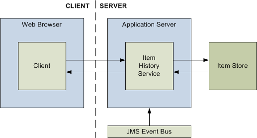

|
|||||||||||
| PREV PACKAGE NEXT PACKAGE | FRAMES NO FRAMES | ||||||||||
See:
Description
| Interface Summary | |
|---|---|
| IItemHistoryService | Contains methods for retrieving the merge and version histories of specific
Items, as well associated methods that provide more detail about
other Items involved in merging and editing operations. |
The standard Intelligence Analysis Platform item history service provides
clients with the ability to look at the changes that items have undergone as
a result of edit and merge operations. The service also enables clients
to examine the differences between two versions of an item.
Calls to methods in this service must include a SOAP header containing
an element named <ApolloMetadata> with an attribute named
TimeZone. The value of the TimeZone attribute indicates
the time zone that the client requires dates and times to be sent and
displayed in.

An Intelligence Analysis Platform client will come to the item history service with one or more item identifiers that it has previously retrieved from the search service, the network search service, or the item retrieval service. The item history service then provides the following functionality:
| Web method | Description |
|---|---|
CompareItemVersions |
Returns a comparison of the status and contents of two specified versions of the specified item. |
RetrieveItemHistory |
Returns summary information about all the changes that have taken place to the specified item between two points in its history. |
RetrieveMergeHistories |
Returns summary information about any items that were merged to create the specified items, to a given depth. |
RetrieveMergePopulations |
Returns summary information about all the items that have been merged into the specified items, and all the items into which the specified items have been merged. |
RetrieveMergeProducts |
Returns summary information about the most recent items to which each of the specified items have contributed content, as a result of merge operations. |
The results that the item history service returns to clients in response to any of these methods are subject to the security rules of the Intelligence Analysis Platform. Clients never see information when item permissions dictate that the user should not have access to it.
|
|||||||||||
| PREV PACKAGE NEXT PACKAGE | FRAMES NO FRAMES | ||||||||||